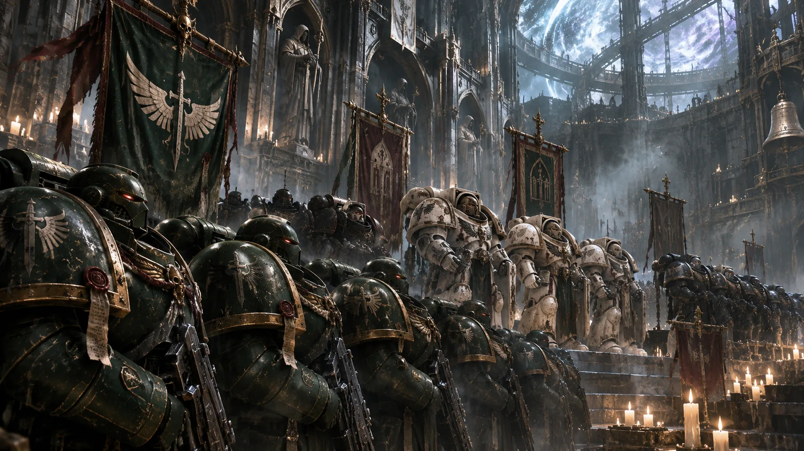

V3.7 原文档案 · 按原稿顺序完整收录 · 未删节
V3.7 原文档案 · 按原稿顺序完整收录 · 未删节三、战团构成
薪传议会 (The Council of the Ember)
薪传议会驻于希芙拉。它继承了第一军团旧骑士团的承誓席位，却早已没有足够的战士按旧制排满整间厅堂。继任院长须走过空席，在三份异文令状前答复前任留下的问题。议会室里还保存着一张被划去两个人名的处决令。
〔旧誓约厅·一份未完成的继任录〕
“你领受什么？”
“命令。”
“若执行它的人死尽了呢？”
答词缺失。
隐修院长 Cenobium Master
“当律法崩塌，唯有灰烬，才是永恒的判决。”
隐修院长坐在旧军用指挥席前，背后是三份互不一致的令状。出征时，他最后一个离开金穹。
熔炉祭司 Crucible Presbyter
“群星早已盲目，唯有余烬从不撒谎。”
熔炉祭司持克罗齐乌斯权杖，吟诵《守望经文》。有些战士听见古卡利班森林的风声后，只能靠那段节律重新握稳武器。祭司的权杖中封着加勒隆最后站立之处的一块石头。
沉渊告解者 Confessor of the Sunken Abyss
沉渊告解者守着最深的忏悔室。他不说话。有人在里面哭了一夜，出来时把自己的供词留在桌上；另一些人只带走了一片空白金属。
深渊观星者 Astrologer of the Abyss
“深渊是一面镜子。”
他的眼睛因常年观测井口布满银色翳膜。观星者携带旧式抑制器与破损的重力刻片；在阿格里斯裂谷，几发弹丸曾突然偏落，令灰骑士得以穿过一道火线。事后抑制器烧毁，持有者一度失明。军医只肯在伤情栏写“过载”。
誓约掌旗官 Ancient of the Oath
“旗帜在，卡利班便未曾陷落。”
战旗以卡利班残存的森林纤维织成。每次出征前在金穹展开，归来后在石廊低垂。旗边有一道裂痕，旧裁缝补过三次。掌旗官不走在队伍最后：烟尘遮断通讯时，战士们循着旗顶的飞翼剑徽重新聚拢。维洛斯撤退途中，一名重伤的余火守卫仍坚持把倒下的旗杆交到下一人手中。

余火守卫：守线的人
〔第一环区，余火守卫阵亡表〕
他们巡矿道、守闸门、抬伤员，也在远征中承担最漫长的阵地推进。最后一页只有四个字：弹药已尽。
567.M34后，旧连队番号仍在，人数却不再齐整。常规战线由余火守卫维系；风暴骑士、失乡骑士、暗夜骑兵与黑剑按每次出征重新编组。军械库悬着几面修补过的旧旗，旗面缝过的胜利纹记尚可辨认。缺了人手的中队仍在出征礼上依原来的次序列队，空位不由别人代站。
〔药剂师封存簿·两页相隔数百年〕
第一份写着：遗体已回，基因种子不可用。 第二份只剩一句：可植入者不足以补齐本次损失。 战团从失散的舰队中收回过甲胄，也在废墟里找回过阵亡者；失去的药剂师、受损的基因种子和无法再造的植入器械，却不随着归航一同回来。矿道少年经过漫长筛选，有人死于改造，有人被送回家，再也没有第二次机会。修复完毕的空甲架，一排排留在军械库里。
〔原铸样本·药剂师与观星者争执记录〕
一次回收行动带回阵亡原铸星际战士的植入组织。药剂师要求继续检验；观星者截取的监听片段里，测试舱曾复现井口附近的旧呼号。仪器随后被停用，另一份重复实验没有得到相同读数。议会下令封存样本，未批准为此改造任何现役兄弟。药剂师在命令下方写：我们又失去了一种可能的补充途径。
〔075.M42，第一环区最后命令〕
第三次信标熄灭后，撤往第二闸门。
信标熄灭。担架还在路上。
守军多停了四分钟。
内环精锐（Inner Circle）
希芙拉风暴骑士 Siofra Storm Knights
“律法纵然崩落，第一军团的基石亦不可移。退下吧，僭越者……这深渊的重量，不是尔等这般蝼蚁可以承受。”
沉重的骨白盔甲上满是旧焊缝。风暴骑士惯用极近距离传送切入，在崩塌的门廊和火线之间楔住阵地；每次传送都需要事先布置定位信标。三伪星之战有一枚信标烧毁，先遣队被迫在错误的侧廊重新集结，错过了突入时机。
灰烬失乡骑士 Banished Ash Knights
“不必祈求宽恕，失乡的游魂……不知怜悯为何物。”
内环中专司决斗与突入的老兵，不担任常规指挥。旧式相位刃偶尔能穿过第一层护甲，却也曾在近战中失效。披挂磨损至极的红色披风，在战场上沉默地穿行，寻觅敌方最强的存在。铁喉巢穴撤离时，有人把重武器拆成担架；那件血污披风随后被剪开，用来捆住断裂的支架。
灰烬遗忘骑士 Cinder Oblivion Knights
“时间证明不了什么。所以我们不再相信。”
三位骑士被派往无主之地回收一名堕天使。任务完成后，他们没有回来。
领队的通讯只传回了一句：“这里的人在被遗忘中战斗。”
薪传议会将三人的状态标注为“现役”——截至M42，他们与希芙拉的通讯频率降至每年一次。末次通讯的内容是一个卡利班古语词。该词汇经分析，与先前回收的战术记录板上、早于卡利班毁灭的时间戳代码，拥有相同词根。
三副空甲架仍占着原位。每年传回的讯号不超过几个音节；有一次，讯号比上一年的记录早到了三天。
突击老兵（Veterans）
暗夜骑兵 Night's Cavalry
光芒褪去之处，便是律法之影的猎场。
在无光之海中游弋的侦察者。骑行喷气摩托，利用引擎低频谐振干扰敌通讯。黑暗中掠过，随后消失在烟尘中。干扰器在维洛斯的兽人战线上曾使敌方炮位失去协同；返航途中两辆喷气摩托因此无法接通友军频道。
遗迹铁匠 Ruin Smith
“钢铁亦有其律法，不可违背。”
遗迹铁匠从废墟中带回损毁的甲片与机魂。他们的伺服颅骨偶尔会用已阵亡骑士的呼号发出检修请求。
余烬刺客 Cinder Assassins
“最后一处据点，还没有清完。”
战壕与废墟的清道夫。双持闪电爪，在照明稀薄的接舷通道里从破口突入。旧战报记他们的爪刃曾击穿一名混沌终结者的动力接头；同次行动有两人未能归舰。
黑剑 Black Blades
“打开缺口。后队跟上。”
黑剑负责穿透敌军重甲阵列和狭窄舰舱，不求在每次突击后保持完整编制。维洛斯一役，他们切断兽人堡垒的燃料总管，却没能带回全部破拆手。
余烬审判者 Cinder Adjudicators
“律法已碎，唯留残响，异端的血肉，连成为余烬的资格都没有。”
审判者操作稀有的热熔与重力火器，通常在掩护完成后才开火。熵火神殿中，他们用尽两组重型电容才压垮一具铸造骑士；余下火力不足以继续追击逃散的黑暗机械教。
巡礼骑士 Crucible Knights of the Great Road
“没有指引，亦无归途。”
小队人数常年不足，专赴失控工事与险境回收遗物、伤员或活着的证人。动力甲上覆盖着泥土和碎石。有人在任务后再没回到原来的编制。
卡利班代行者（Agents of Caliban）
卡利班代行者不穿阿斯塔特动力甲。石匠、书吏、修画者与护卫走过金穹的侧门，名字只记在属民册中。
碎律修女 Maiden of the Shattered Anthem
恩典已逝，祷言化灰。
熵火之后，以此名领诵的凡人女性在战场上曾令一队邪教徒失去方向，也有敌军毫无反应的记录。一次失控唱诵伤及护卫，议会此后禁止她们单独随军；每次出征，须有告解者在场。
指头女巫 Finger Maiden
“即便引导已经破碎，余烬微光……仍将指引汝等重铸。”
她们随军携带旧盐矿的细粒与写有卡利班短句的铜片，替陷入幻听的战士重复熟悉的出征口令。并非每个人都能被唤回。指头女巫不得独自接触封存俘虏；一名曾违令的领路人被禁止再踏入内环。
无名扈从 The Nameless Humble
“卑微之躯，亦可承载律法的重量。”
沉默地行走在骑士们的阴影中，背负备用武装或香炉。没有基因强化的躯体，用血肉之躯践行那份原始的誓约。
封禁令
〔代行者名册〕
阿斯塔特战团总数栏没有他们的名字。无名扈从的册页上，几处空格曾被反复擦写。
熵火幸存者的声带已毁。她离开后，石廊中的继任唱誓者以手势、敲击与短句领诵；她们继承称号，不继承那名修女的战甲、身份或遗嘱。